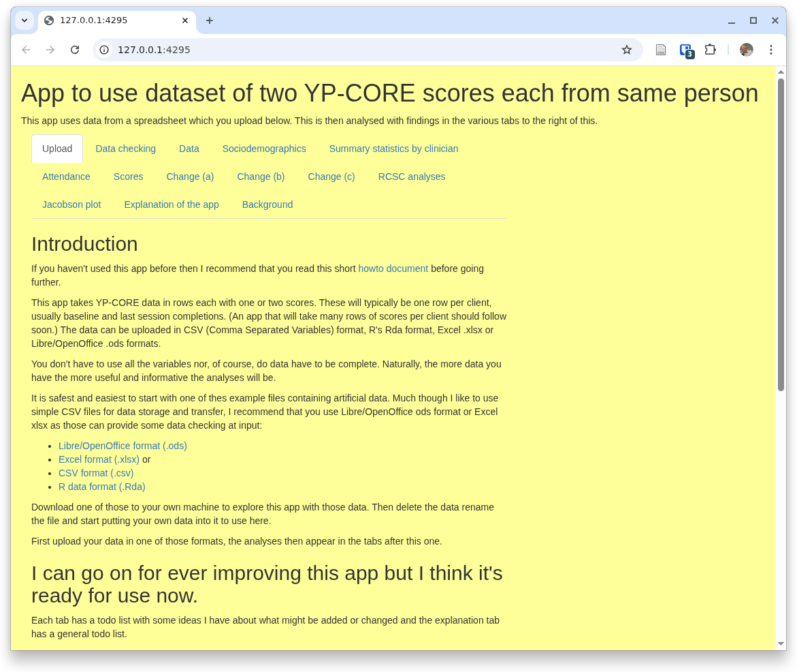
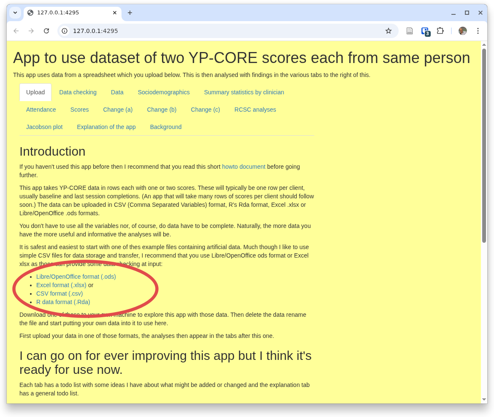
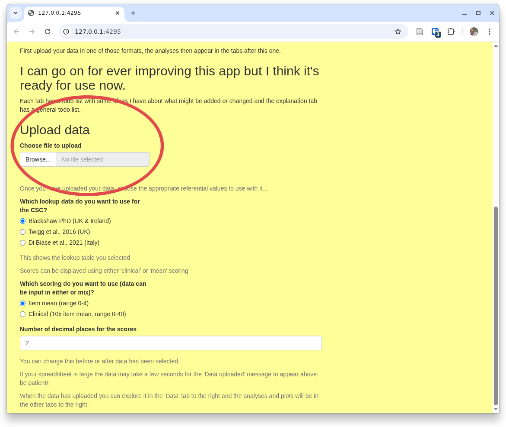
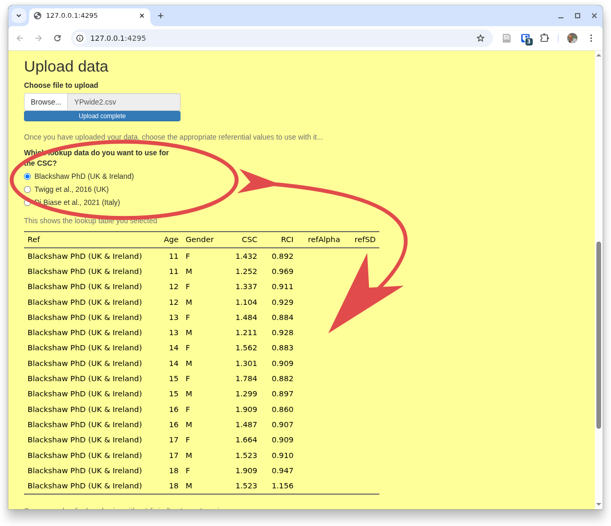
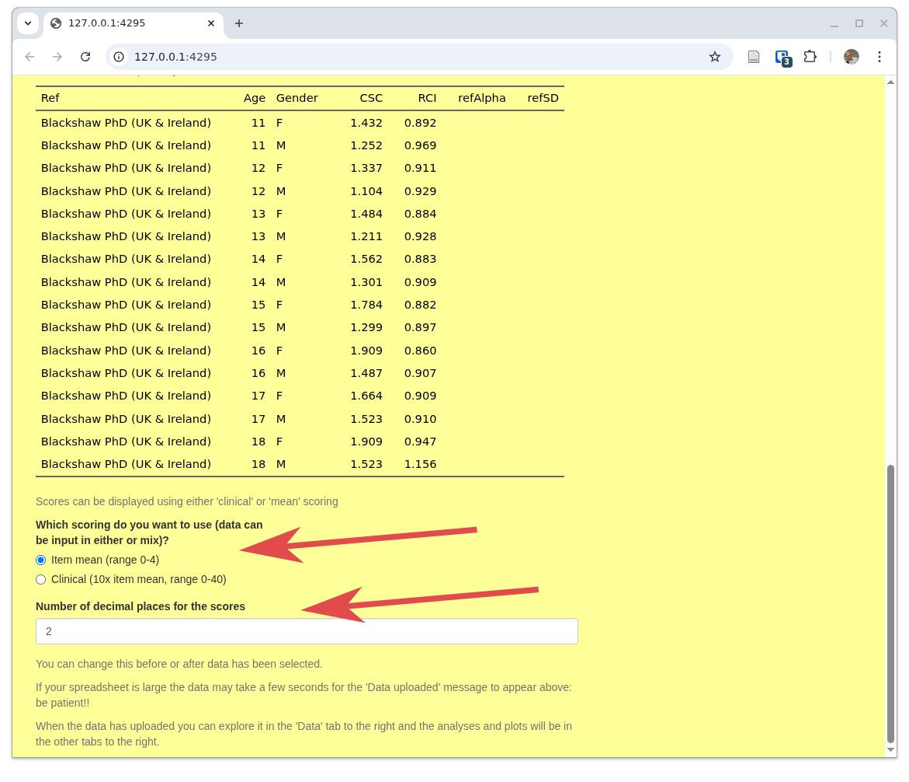
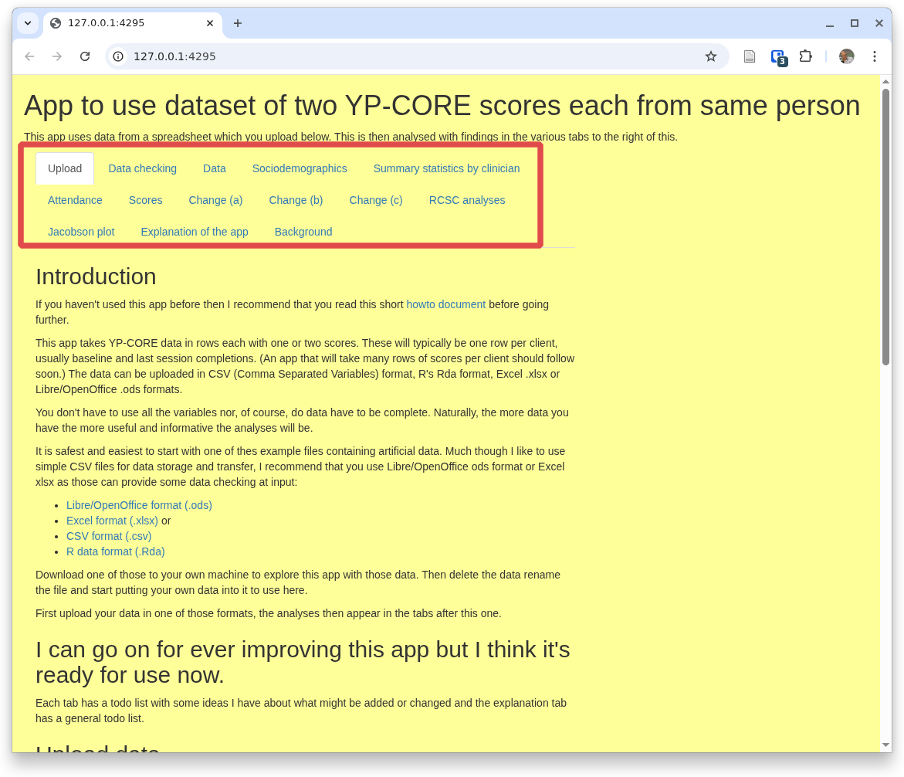
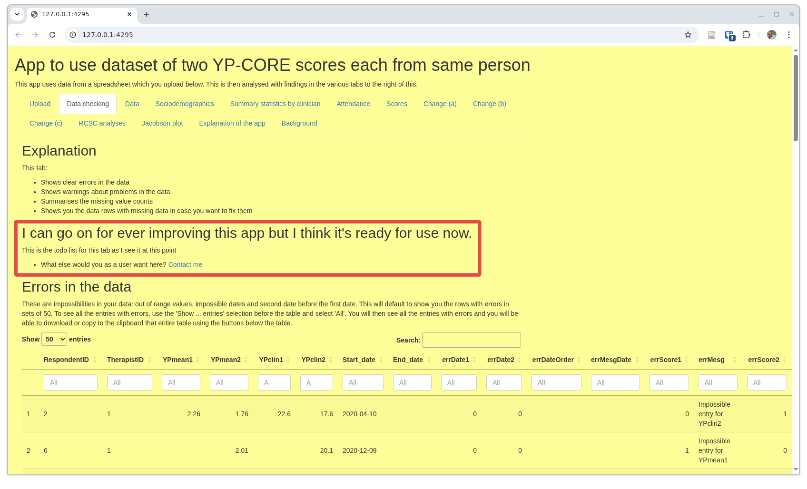
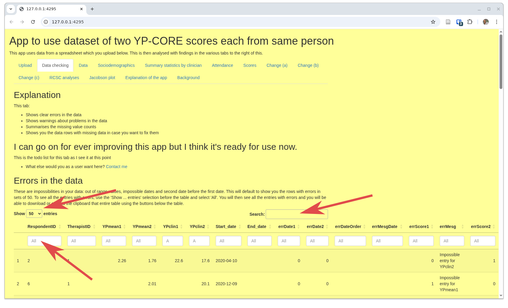

Inputting data to analyse and some basic settings
When you open this app you will be seeing something like this.
Obviously, the URL won't be '127.0.0.1:4295' and what you see will depend on the browser that you are using and will look fairly different on a 'phone or even a tablet. The text may also have changed a bit by the time you are using the app, even that list of tabs: 'Upload', 'Data checking' ... may have changed.
However, the basic layout will be something like that.
The first thing you need to do is to give the app some data to process. Start by pulling down one of the files shown here:

Then, to get used to the app, don't change the data in the file, just upload it into the app. You do that using that section of the page saying 'Upload data' and offering you a file selection input marked 'Browse...', here:

You can pull a file, ideally starting with the one you just downloaded with its artificial data. Here you can see that I've done that, uploading YPwide2.csv

You can also see there that the app is showing you the default referential data.

If you want one of other available referential data you can just select the one you want at any point by coming back to this home tab ('Upload') and changing your selection.
The last options on this home tab are at the bottom of the tab and shown here.

The first relates to the fact that, regrettably, there are two ways of scoring some of the CORE measures:
- 'Mean' scoring' which uses the mean of the item scores allowing prorating of up to 10% missing items (i.e. across nine YP-CORE items if one is missing, but not prorating if more items are missing and ...
- 'Clinical' scoring which is the mean score multiplied by 10.
The second input control here sets the number of decimal points that the app will use for most of the analyses it provides. Two is usually sensible but you can change this at any point, i.e. you may be looking at analyses in one of other tabs and you can come back to this tab and reset what you want here.
Moving on to get analyses out of the app
Now we have data in and have chosen those basic settings we can get the app to do some work. This is all done in separate tabs:
There are three 'odd' tabs. We have just been through the home/upload tab. The other two that aren't about analyses are those last two: 'Explanation of the app', and 'Background'. The first of those is what it says but not a full how to guide like this and the second covers the copyright/copyleft status of all my apps and the history of the app.
So that brings us to the nuts and bolts of the app. Currently the tabs are as shown there, others may have been added to the app by the time you are reading this as I hope they'll be pretty self-explanatory. The second tab, 'Data checking' is what it says and with the next tab, 'Data' it is not really about analyses but about the data itself.
Here is the top of the 'Data checking' tab:

I have framed an area that is present in all the tabs except the 'home/upload' tab: an update/status/suggestions block. Do feel free to suggest improvements and to report errors or problems. I don't promise that I will implement all suggestions but I will consider each one. Equally, I can't promise to be able to solve any and all problems people encounter though I will do my best and I will most certainly try to correct any reported errors. This has grown into a pretty huge app with over two thosand lines in the main app and definitely still growing. I am not a gifted programmer so I am sure frank errors will emerge. Please report them!
This next block selects rows in the uploaded data that seem to have errors.

That screenshot has arrows marking three key parts of this, an interactive 'DT/DataTable'.
- The first is very self-explanatory as it just controls how many lines of data that appear to contain errors are show in the table. The 'all' option is important if you want to download this table. More on that below.
- The second is also self-explanatory: you can search across all the fields in the table. I think that's only likely to be useful to find a particular client by ID.
- The last points to the first of the filters at the head of each column. These enable you to filter to rows where the value for that column matches what you put in that box. There's a box for each column as you see. So to filter to all rows with errors in the first YP-CORE score, put '1' in the column errScore1. The column 'errMesg' should give you a message about the error.